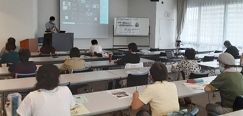

|
|
9月14日（火）10時30分より、埼玉会館7A会議室に13人およびZoomによるオンライン参加28人、計41人の参加で開催しました。 埼玉県危機管理防災部災害対策課主幹の田口敬之さんを講師に、埼玉県の災害体制や近年の主な災害対応などについて説明いただきました。地域災害計画では、自助・共助による防災力の向上や多様な視点での対策が大切であること、県の災害体制では、応急対応力の強化や協定締結団体・事業者との協力、災害情報発信の強化などについてお話しいただきました。参加者からは、県の具体的な対策や対応を知ることができてよかった、さらに市町村の対策について調べたい、我が家のタイムラインを家族と話したいなどの感想が寄せられました。  |